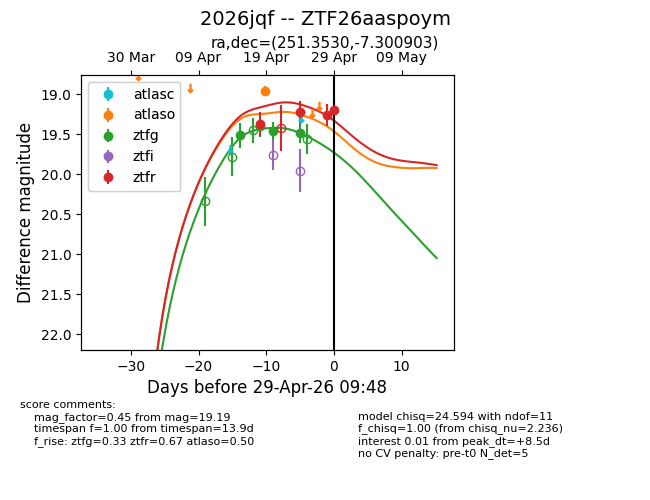
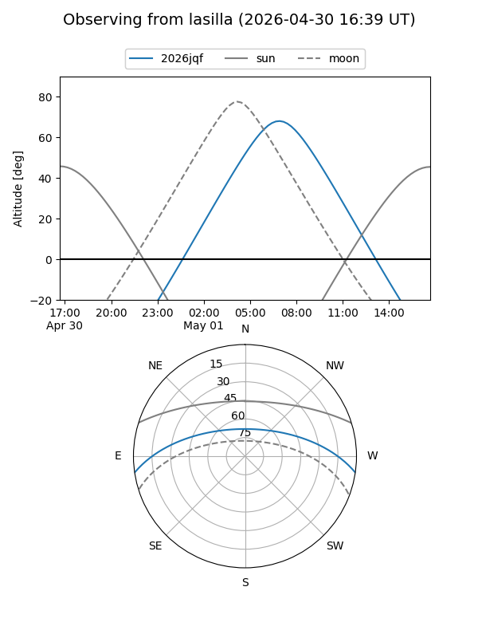
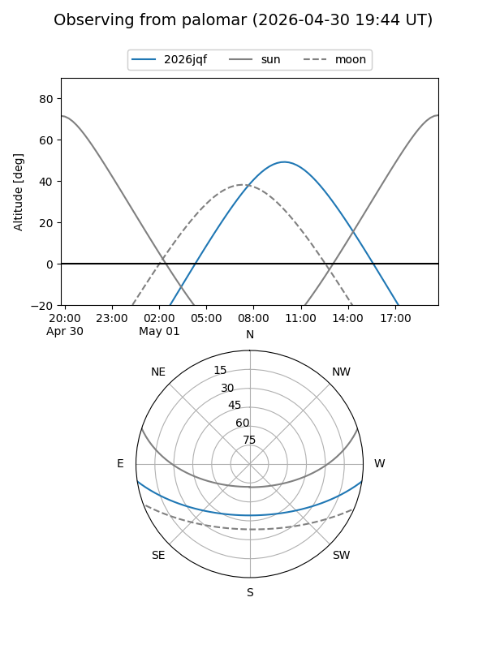
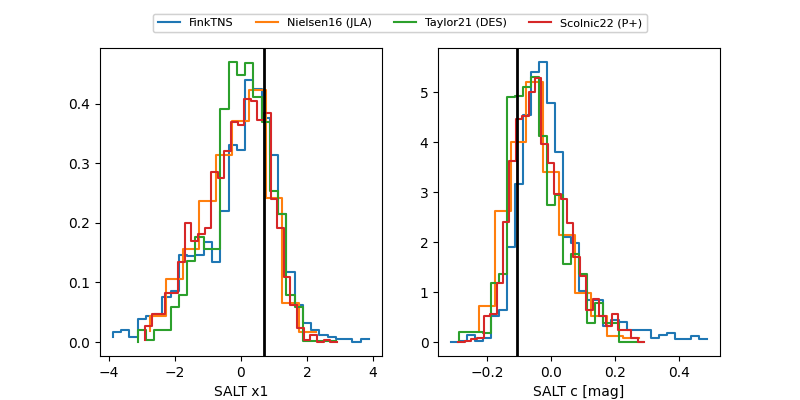

2026jqf
Target 2026jqf at 2026-04-29 09:51
Aliases and brokers:
FINK: link
Lasair: link
ALeRCE: link
TNS: link
YSE: link
alt names
ZTF26aaspoym (ztf,fink_ztf)
2026jqf (tns,yse)
Coordinates:
equatorial (ra, dec) = 251.3530,-7.30090
equatorial (HMS+DMS) = 16:45:24.72,-07:18:03.25
galactic (l, b) = (10.4796,+23.79002)
Flags:
Photometry:
last atlaso=18.96, ztfg=19.49, ztfr=19.19
1 atlaso, 4 ztfg, 4 ztfr detections
Lightcurve

Visibility


Additional plots
